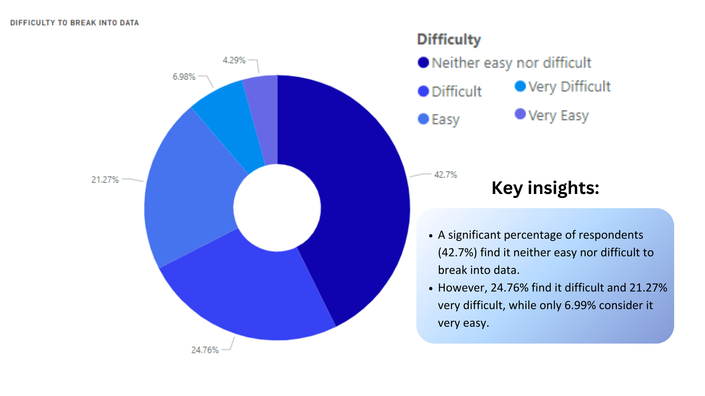

MySQL & Tableau
Tech Companies Layoffs During COVID-19 Pandemic from 2020 to 2022
Objective:
Analyze tech layoffs from 2020 to 2022 to uncover industry impacts, company stages affected, and trends influenced by the COVID-19 pandemic.
Background:
The analysis of tech industry layoffs from 2019 to 2022 is necessary to understand the impact of the COVID-19 pandemic on employment trends and business stability.
This raises critical questions about business sustainability, funding efficiency, and industry resilience during economic disruptions.
Analyzing these patterns helps identify key factors contributing to layoffs and provides insights to develop strategies for mitigating similar impacts in the future.
Recommendations:
- Tech firms should prioritize sustainable growth and diversified revenue streams.
- Implement flexible workforce strategies to build resilience against future economic disruptions.
- Evaluate funding allocation strategies to ensure resources are effectively mitigating risks.
This project can be accessed through this GitHub Link and the dashboard can be access through this Tableau Public Link.
Data Source: Layoffs Dataset by Swapnil Tripathi
Excel & PowerBI
2022 Data Professional Survey Breakdown
Objective: To identify factors influencing data professionals' satisfaction
and provide insights for improving compensation, work-life balance, and skill development strategies.

Background:
The analysis was conducted in 2022 to address the evolving landscape of data professions,
where rapid technological advancements and increasing demand for skilled data professionals are shaping career expectations.
Recommendations:
- Improving compensation packages and offering flexible work arrangements can significantly enhance job satisfaction, especially concerning salary and work-life balance.
- Companies should evaluate salary competitiveness for roles like Data Engineer and Data Analyst to ensure fair compensation and reduce dissatisfaction.
- Python and SQL skills should be prioritized in hiring and training programs, as these languages are most in-demand across data roles.
Data Source: Data Professional Survey Dataset by Alex The Analyst
Background:
This analysis is essential to address the disparities in health insurance coverage and the imbalance in healthcare facility distribution across West Java.
Recommendations:
- Prioritize the construction of specialized hospitals in high-demand areas (e.g., Cirebon, Depok).
- Advocate for government policies that mandate balanced investment between primary and specialized healthcare facilities.
- Promote private and corporate health insurance options targeting informal workers with flexible, low-cost plans.
The dashboard can be access through this Tableau Public Link.
Data Source: REVO U Mini Course Study Case (January,2025)
This project can be accessed through this GitHub Link
Background:
This approach answers the business problem by helping potential hosts understand where and how to invest their efforts to maximize returns and occupancy.
Recommendations:
- For New Hosts:
Focus on setting up listings in high-performing zip codes (e.g., 98119).
Highlight unique selling points such as proximity to tourist spots or amenities to justify higher prices in these areas.
- For Budget-Conscious Hosts:
Consider targeting budget travelers by listing in affordable zip codes like 98106 or 98125.
Offer discounts, flexible cancellation policies, or bundled amenities to stand out.
- Seasonal Preparation:
Prepare listings (e.g., updating photos, adjusting pricing) ahead of the summer and holiday seasons.
Offer promotions during off-peak months to maintain steady bookings.
- Data-Driven Pricing:
Use historical pricing trends to set competitive and dynamic pricing.
- Explore Larger Properties:
Hosts with access to capital should explore acquiring or managing larger properties (5+ bedrooms) for higher returns.
This project can be accessed through this Tableau Public Link.